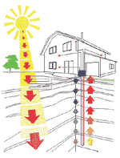
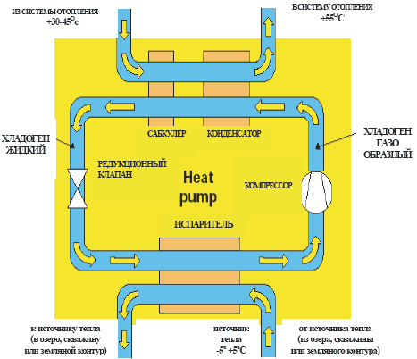
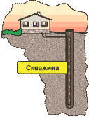
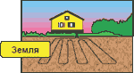
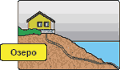
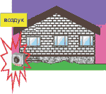

Что такое тепловой насос и зачем он нужен

- Зачем нужен тепловой насос? Когда следует выбрать тепловой насос? Преимущества.
- Принцип действия теплового насоса.
- Источник энергии. Необходимые требования.
- Пиковый электродогрев. Зачем?
- Кондиционирование, пассивное и активное. Принцип.
- Система отопления – тепловой насос и теплый пол.
|
Тепловой насос - современный источник энергии, используемой для работы систем кондиционирования, отопления горячего водоснабжения. В отличии от других теплогенераторов (газовых, дизельных, электрических), тепловой насос "выкачивавает" накопленную за теплое время года энергию изокружающей среды - грунта, скальной породы, водоёма. Какие же преимущества даёт использование теплового насоса? Прежде всего это повышение уровня комфорта. Выбрав тепловой насос вместо системы, работающей на жидком топливе, вы уменьшите пожароопасность своего дома, избавитесь от дымовой трубы, запаха дизельного топлива и необходимости помнить о том, чтобы вовремя заказать его доставку. Если вы хотели бы установить систему, работающую на электичестве, но для этого не хватает подключённой электрической мощности дома, тепловой насос может решить эту проблему - для его использования хватит четверти мощности, необходимой для традиционной системы отопления. Таким образом, использование теплового насоса - это ещё и экономия энергии и денег. В России сегодня стоимость производства тепловой энергии значительно завыисит от вида топлива: дороже всего электроэненргия, затем идёт дизельное топливо и газ. Но цены на энергоносители всё время меняются, и разница между ними сокращается. При этом разница в стоимости установки теплового насоса с грунтовым теплообменником и котельной на дизельном топливе с топливным хозяйством, дымовой трубой, системой автоматического управления окупится за 3-5 лет. |
 |
|
Как работает тепловой насос.
Источником тепла может быть скалистая порода, земля, вода, воздух. Теплоноситель нагревается на несколько градусов, проходя по внешнему контуру, уложенному в землю или водоём, Внутри теплового насоса теплоноситель, проходит через теплообменник (испаритель) и отдает собранное тепло внутреннему контуру теплового насоса. Внутренний контур теплового насоса заполнен хладагентом, имеющим низкую температуру кипения, который, проходя через испаритель, превращается из жидкого состояния в газообразное при температуре -5оС и низком давлении. Из испарителя газообразный хладагент попадает в компрессор, там он сжимается до высокого давления и высокой температуры. Затем горячий газ поступает во второй теплообменник - конденсатор, где происходит теплообмен между горячим газом и теплоносителем из обратного трубопровода системы отопления дома. Хладагент, отдавая тепло системе отопления, охлаждается и превращается в жидкость, а теплоноситель системы отопления поступает в отопительные приборы. После прохождения через конденсатор жидкий хладоген может быть еще более охлажден, а температура прямой воды системы отопления увеличена посредством дополнительно установленного сабкулера. Давление хладагента, тем не менее, все еще остается высоким. При прохождении хладагента через редукционный клапан давление понижается, хладагент попадает в испаритель, и цикл повторяется снова.
 |
|
|
Необходимые требования к источнику энергии
Источником энергии может быть грунт, скальная порода, озеро, вообще любой источник тепла с температурой - 1 градус Цельсия и выше, доступный в зимнее время. Это может быть река, море, выход теплого воздуха из системы вентиляции или какого-либо промышленного оборудования. Внешний контур, собирающий тепло окружающей среды, представляет собой полиэтиленовый трубопровод, уложенный в землю или в воду. Теплоноситель – 30% раствор этиленгликоля (либо этилового спирта). |
|
|
Скважина.
При использовании в качестве источника тепла скалистой породы трубопровод опускается в скважину. Можно пробурить несколько не глубоких скважин - это, возможно, обойдётся дешевле, чем одна глубокая. Главное - получить общую расчетную глубину. Для предварительных расчетов используется следующее соотношение – 50-60 Вт тепловой энергии на 1 метр скважины. То есть, для установки теплового насоса производительностью 10 кВт необходима скважина глубиной 170 метров. |
 |
|
Земляной контур.
При укладке контура в землю желательно использовать участок с влажным грунтом, лучше всего с близкими грунтовыми водами. Использование сухого грунта тоже возможно, но это приводит к увеличению длины контура. Трубопровод должен быть зарыт на глубину примерно 1 м, расстояние между соседними трубопроводами - примерно 0.8-1.0 м.
Удельная тепловая мощноть трубопровода, уложенного в землю
трубопровода - 20-30 Вт/м. Т. е. для установки теплового насоса
производительностью 10 кВт достаточно 350-450 м теплового контура, для
чего хватит участка 20х20 кв.м. |
 |
|
Водоём.
На 1 метр трубопровода приходится ориентировочно 30 Вт тепловой мощности.Таким образом, для установки теплового насоса производительностью 10 кВт необходимо уложить в озеро контур длинной 300 метров. Для того, чтобы трубопровод не всплывал, необходимо установить около 5 кг груза на 1 погонный метр трубопровода. |
 |
|
Теплый воздух.
Существует и специальная модель теплового насоса с воздушным теплообменником для получения тепловой энергии из воздуха, например, из вытяжки вентиляционной системы. Она может использоваться на производственных предприятиях вырабатывающих большое количество тёплого воздуха (пекарни, производство керамики и т.д.). Такая модель пригодится и для загородного дома для работы системы горячего водоснабжения в летний период. |
 |
|
Зачем нужен пиковый электродогрев.
Электронагреватели установлены практически во всех моделях тепловых насосов. Это связано с тем, что выбирая отопительную технику, рассчёт номинальной мощности при выборе отопительной техники делается с учётом покрытия тепловой нагрузки в самые холодные дни, например, для Петербурга минимальной расчётной температурой считается -26oC. Но такая температура держится только несколько дней в году, а значит потенциальные возможности теплового насоса практически не будут использоваться. Экономически выгоднее получается приобрести тепловой насос меньшей мощности, а в самые холодные дни пользоваться электрообогревом. Комбинация двух источников тепла - вырабатывающего дешёвую энергию, но дорогостоящего (тепловой насос), и дешевого, но вырабатывающего дорогую энергию (электронагреватель) позволяет снизить стоимость капитальных затрат и увеличить срок окупаемости теплонасосной установки. Для выбора соотношения мощностей теплового насоса / электронагревателя используется специальный интегральный график, универсальный для всех регионов России. Принцип кондиционирования (активного и пассивного).В зимнее время тепловой насос переносит из окружающей среды тепло, которое затем используется в системе отопления. Летом, наоборот, «холод» из скважины (7-9oC) переносится в помещения дома. Принцип работы системы примерно такой же, только вместо радиаторов используются фанкойлы. При пассивном охлаждении теплоноситель просто циркулирует между фанкойлами и скважиной, т.е. холод из скважины напрямую поступает в систему кондиционирования - компрессор не работает). Если пассивного охлаждения не достаточно, ключается компрессор теплового насоса, который дополнительно охлаждает теплоноситель. Водяной теплый пол и тепловой насос.Тепловой насос и система отопления "Тёплый пол" как будт специально созданы друг для друга. Технические особенности теплового насоса таковы, что температура, подваемая в систему отопления, обычно не больше 55oC, а температура "обратной" воды должна быть не больше 50oC. При использовании традиционных радиаторов необходим тщательный расчёт отопительных приборов. Для тёплого пола же данной температуры вполне достаточно. При установке теплового насоса в системе отопления "тёплый пол" энергия будет не только экономно производиться, но и экономно распределяться. Тепловой насос позволяет съэкономить до до 80% энергоресурсов, по сравнению с использованием традиционных источнов тепла, а тёплый пол экономит 10-15% энергии по сравнению с радиаторными системами отопления. |